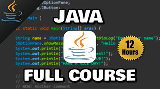
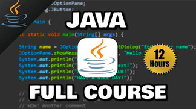
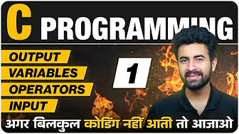
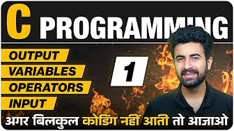
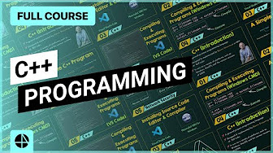
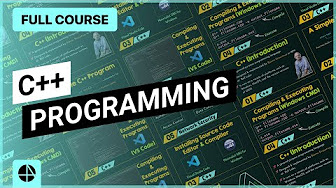

Tech Resources

 

Java is a high-level, class-based, object-oriented programming language that is designed to have as few implementation dependencies as possible. It is a general-purpose programming language intended to let programmers write once, run anywhere (WORA),[17] meaning that compiled Java code can run on all platforms that support Java without the need to recompile.[18] Java applications are typically compiled to bytecode that can run on any Java virtual machine (JVM) regardless of the underlying computer architecture. The syntax of Java is similar to C and C++, but has fewer low-level facilities than either of them. The Java runtime provides dynamic capabilities (such as reflection and runtime code modification) that are typically not available in traditional compiled languages. As of 2019, Java was one of the most popular programming languages in use according to GitHub, particularly for client server web applications, with a reported 9 million developers.
 


C is a general-purpose computer programming language. It was created in the 1970s by Dennis Ritchie, and remains very widely used and influential. By design, C's features cleanly reflect the capabilities of the targeted CPUs. It has found lasting use in operating systems, device drivers, protocol stacks, though decreasingly for application software. C is commonly used on computer architectures that range from the largest supercomputers to the smallest microcontrollers and embedded systems.C is an imperative procedural language, supporting structured programming, lexical variable scope and recursion, with a static type system. It was designed to be compiled to provide low-level access to memory and language constructs that map efficiently to machine instructions, all with minimal runtime support. Despite its low-level capabilities, the language was designed to encourage cross-platform programming. A standards-compliant C program written with portability in mind can be compiled for a wide variety of computer platforms and operating systems with few changes to its source code.
 

C++ is a high-level, general-purpose programming language created by Danish computer scientist Bjarne Stroustrup. First released in 1985 as an extension of the C programming language, it has since expanded significantly over time,modern C++ currently has object-oriented, generic, and functional features, in addition to facilities for low-level memory manipulation. It is almost always implemented as a compiled language, and many vendors provide C++ compilers, including the Free Software Foundation, LLVM, Microsoft, Intel, Embarcadero, Oracle, and IBM. C++ was designed with systems programming and embedded, resource-constrained software and large systems in mind, with performance, efficiency, and flexibility of use as its design highlights.[14] C++ has also been found useful in many other contexts, with key strengths being software infrastructure and resource-constrained applications,including desktop applications, video games, servers (e.g. e-commerce, web search, or databases), and performance-critical applications (e.g. telephone switches or space probes)


The HyperText Markup Language or HTML is the standard markup language for documents designed to be displayed in a web browser. It is often assisted by technologies such as Cascading Style Sheets (CSS) and scripting languages such as JavaScript. Web browsers receive HTML documents from a web server or from local storage and render the documents into multimedia web pages. HTML describes the structure of a web page semantically and originally included cues for its appearance. HTML elements are the building blocks of HTML pages. With HTML constructs, images and other objects such as interactive forms may be embedded into the rendered page. HTML provides a means to create structured documents by denoting structural semantics for text such as headings, paragraphs, lists, links, quotes, and other items. HTML elements are delineated by tags, written using angle brackets.